Digital forensics · eBPF · Go
Flight Recorder
Containers live for minutes. Security alerts arrive in tens of minutes. This preserves the crime scene before it deletes itself.
Digital forensics · eBPF · Go
Containers live for minutes. Security alerts arrive in tens of minutes. This preserves the crime scene before it deletes itself.
Real output. The whole evidence pipeline — seal, sign, render, encrypt, verify — followed by a deliberate one-byte change to prove the seal catches it.

Runs on Windows, macOS and Linux. No kernel, no root, no cluster.
When an attacker breaks into a container, the evidence that matters — the stolen password, the address it was sent to, the code that ran — exists only in that container memory. None of it reaches a log file.
▸ The difference is the blind spot. The investigator arrives at an empty room.
Four steps, all automatic, all finished before the container is gone.
eBPF probes observe process execution inside the Linux kernel, with no agent injected into the workload.
On a rule match, process memory is read with process_vm_readv — never stopping, signalling or attaching to the target.
A SHA-256 Merkle tree over the dump, signed with ECDSA P-256. One altered byte breaks the seal, provably.
A CASE/UCO JSON-LD bundle — the format INTERPOL, Europol EC3 and NIST endorse — readable years later without this tool.
Because they answer a different question. Tracee, Tetragon and Falco tell you something bad happened. This tells you what was inside the process, and preserves it.
| Tracee | Tetragon | Falco | Flight Recorder | |
|---|---|---|---|---|
| Focus | Detect | Enforce | Alert | Preserve |
| Memory contents captured | No | No | No | Yes |
| Cryptographic sealing | No | No | No | Merkle + ECDSA |
| Court-ready output | No | No | No | CASE/UCO JSON-LD |
| Target process stopped | n/a | n/a | n/a | Never |
It is complementary, not competitive: run Falco for detection and Flight Recorder for preservation.
From the integration suite on Linux 6.6. Reproduce with sudo make test-integration.
Download, unpack, run one command. Nothing to configure.
flight-recorder demoOr verify the sealed sample bundle committed to the repository, using only the public key — the position a third-party examiner is in:
flight-recorder verify --bundle examples/demo-bundle --key examples/demo-pub.pem [ OK ] manifest file digests 5 file(s)
[SKIP] payload decryption
[SKIP] payload sha256
[SKIP] merkle root
[SKIP] leaf count
[ OK ] ecdsa signature
[ OK ] signer key id
[ OK ] CASE/UCO structure
SEAL VERIFIEDChecks that could not be run are reported as skipped, never as failures. An examiner should not be shown a red failure on evidence that is intact.